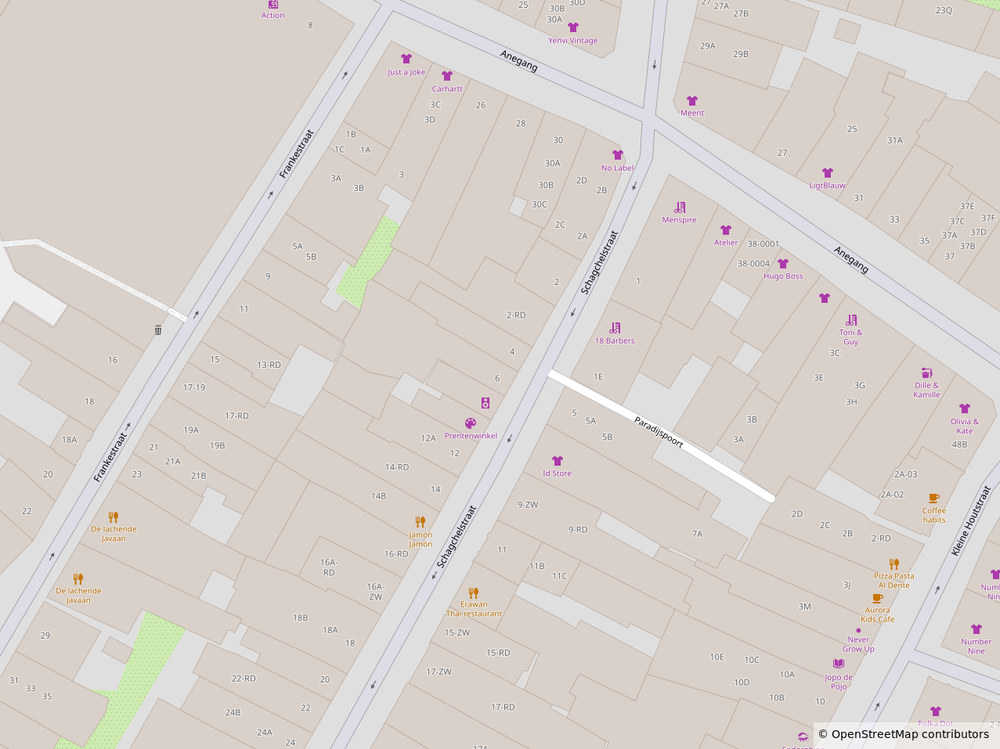

You don't have to explore the hobby alone.
Haarlem has several shops where you can
discover tabletop games, find miniatures
and buy the materials you need to start painting.
Some stores also offer places to play, events
and opportunities to meet other hobbyists.
Where to Buy
Whether you're looking for your first miniature,
new paints or tools for your next project,
Haarlem has a range of specialist shops worth
exploring. Some focus on tabletop games and
miniatures, while others offer model-building
supplies and materials.
Local Stores
Here are some places in Haarlem where you
can explore the world of miniatures,
tabletop games and model building.

D6 Gaming
D6 Gaming
A local games store offering tabletop
games, Dungeons & Dragons,
Warhammer products and other gaming
supplies. It also has a gaming space
where visitors can join events and
meet other players.
A specialist games shop selling
board games, miniature games and
related products. It also organises
events for different games, making
it a place to discover new tabletop
hobbies.
A board game shop with a cafe where
visitors can try games and play
together. Although it is not
specifically a miniature-painting
store, it is a good place to
discover tabletop gaming and
meet other players.
Tabletop events and hobby meetups are a great
way to learn from other players, discover new
games and share your projects.
Some local game stores organise gaming evenings
and special events throughout the year.
Check their websites to find out what is
currently scheduled.
Hobby Community
Hobby Events at D6 Gaming
Check for opportunities to meet
other hobbyists, paint miniatures
or take part in tabletop activities.